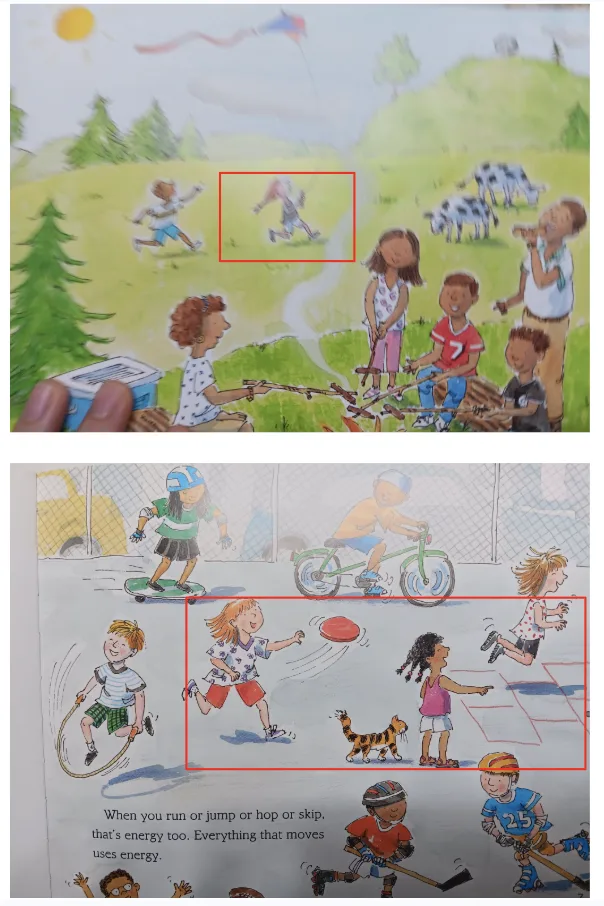

Overview / 02
Children and adults wear head-mounted eye trackers during shared book reading. Gaze is mapped onto the scene camera, segmented into fixations and saccades, and summarized as first fixations and dwell maps over the characters on the page.
Example from the lab
In an eye-tracking study of children's picturebook reading, we found evidence of gender and racial patterns in visual attention. The initial fixation, the very first place a child looks right after turning the page, reflects their most immediate, often nonconscious attentional interest. White girls, for example, were more likely to look first at White girls' activities on the page, even when the scene included many characters across races and genders.

Outdoor picnic page. The child's gaze returned again and again to the two girls playing in the background, rather than to the mixed-gender group sitting together in the foreground, the boy looking through binoculars, or the animals in the scene.
Playground page. The child focused mainly on the girls' activities in the center and right, the frisbee play and hopscotch, and gave less attention to the boys' movement activities, such as biking and hockey, even though they were equally prominent.
Patterns like these are read alongside children's talk and drawings and are interpreted at the group level; a single child's gaze is never used to label that child.
Research agenda
This study is one strand of a single question that runs through the lab: how the texts, media, and tools adults choose shape what children notice, who they see themselves as, and whose knowledge counts.
Analyses of picturebooks and children's media, including how bodies, gender, and roles are portrayed (embodied representation).
This eye-tracking work: whether representation draws children's attention differently, beginning with the very first look.
Shared-reading talk analyzed as knowledge graphs that show whose ideas lead the conversation.
PLACE-AI applies the same lens to generative AI, auditing whose places, cultures, and knowledge appear in AI-generated texts.
Through MOSAIC, findings return to teachers, librarians, and families as support for choosing books and asking children who tells the story and who is missing.
In depth
Picture books, poems, informational texts, and digital narratives build vocabulary, knowledge, and comprehension. They also communicate social expectations through image, voice, character, and narrative perspective.
Head-mounted eye tracking during shared reading shows where children look first and how long they stay, offering a window into which characters and images draw their attention before they say a word. Pairing gaze with children's talk links attention to interpretation.
This work asks how recurring depictions of gender, race and ethnicity, disability, family roles, and cultural authority shape the identities and futures children can imagine. In developmentally appropriate shared reading, children can ask who tells the story, whose perspective is missing, and what changes when the story is retold; their responses through talk, drawing, and dramatization are both literacy learning and critical interpretation.
Critical, human-centered lens
Illustrations, layout, and voice each carry meaning; where children look shows which signs speak to them.
Whose faces, families, and places appear in the books we study? Book sets are audited for representation before gaze is interpreted.
Teachers, librarians, and families use findings to choose and discuss books; gaze data never label a child.
Across fields
Young children read illustrations long before they decode text. Where they look, and for how long, shows how they build a story from image, layout, and an adult's voice: the multimodal comprehension that conventional assessments rarely capture.
Shared reading depends on joint attention between child and adult. Dual eye tracking shows when their gaze converges, who follows whom, and how representation in a book (who looks like me, who leads the story) draws children's attention as identities form.
Fixations are mapped onto characters and regions with computer vision, then aligned in time with speech, pointing, and page turns. The result is a single timeline of what the child sees, hears, and says.
Figures
How it works
Child and adult wear head-mounted trackers synchronized with a scene camera.
Pupil and corneal reflection give a gaze point on every scene-camera frame.
The gaze stream is divided into fixations and saccades, and characters on the page become areas of interest.
First-fixation order and dwell maps are compared across children and groups.
Findings
Eye-tracking analyses identified children's initial visual attention patterns during shared book reading.
White girls showed an own-group visual attention bias, fixating first on White female characters engaged in similar activities.
Output
Transforming ECE with multimodal AI: Harnessing cutting-edge Artificial Intelligence and Machine Learning to advance teaching, learning, and quality in early learning environments
OU JRCoE Center for Educational Development and Research, Norman, OK
Transforming early care and education with AI and Machine Learning: Using Big Data to improve quality in early learning environments
SKKU-OU Global Dialogues in Early Childhood Education, Seoul
Reimagining society through Artificial Intelligence and Machine Learning: The power of Big Data in child and family studies
Seoul National University, Virtual